Chapter 14 — The Split
The October all-hands had two slides nobody forgot. The first made the room go still: Elias Brandt — transitioning to advisory role, effective January. Most of engineering had heard the rumor; seeing it in 48-point font was different. The second slide arrived twenty minutes later, fresh from the CTO's conference in Lisbon: a constellation of hexagons connected by arrows, and beneath it, EVENT-DRIVEN MICROSERVICES — TARGET: Q3.
"Industry's moving," the CTO said. "Netflix runs hundreds of services. We run one. I want a plan."
Maya watched Elias not react. He had eleven weeks of opinions left and was visibly rationing them. That afternoon a calendar invite appeared on her screen — Architecture session: the split. Friday. Whole team. — with a note from Elias underneath: "You argue both sides. For, then against, each at full strength. No verdict until someone demands one."
She understood immediately what it was. Everyone would. The org had spent two weeks openly wondering who inherited the whiteboard chair, and Elias had just scheduled the audition in public.
In my old life this meeting happened too, she thought, except the deck won and we spent two years untangling an "order service" that couldn't take an order without four network calls. She started building two decks of her own.
The investigation
Friday. The Wall on her left, a year of ink on it, the CTO front-row.
Maya argued the split first, honestly, the way the conference would have. Notifications had a scaling profile nothing else shared: a bounty award triggered email bursts, the Monday digest was a thundering herd, and all of it ran on Atrium's threads next to report submission. Blast radius was real — last month's cascade (one slow vendor call drained the threads every endpoint shared) had proved an enrichment vendor could reach the tracker itself, and isolation is the only fence that holds at 3 a.m. Team autonomy was real: eleven engineers stepping on one deploy pipeline. She made it sound inevitable. The CTO nodded along.
⏸ Your call. Before Maya rotates the deck: where exactly does the split break against Atrium's actual schema, and which -ility does the Q3 slide quietly spend? Commit.
Then she rotated the deck and demolished her own case.
"Triage and payout share a transaction," she said. "One commit moves a report to Awarded, writes the payout, writes the audit row. Atomically. Split those into services and that atomicity is gone — not weakened, gone. Two-phase commit exists; banks run it — but it buys atomicity by blocking: every participant holds its locks in-doubt until a coordinator that just died comes back with the verdict, and none of that is even on offer across HTTP and Kafka. Nobody in this room is signing up to operate a coordinator."
Her hand-wired instinct whispered the Meridian move — one connection, one try block, both writes inside, commit at the bottom. That instinct was the trap: there is no shared connection across a network. There never was; a single process had just let her pretend.
(If you committed at the pause: the break is the shared transaction — triage, payout, audit row, one fact in one commit — and the slide spends operability and cost.)
"What replaces it is a saga: a chain of local transactions with compensating actions. Payments commits, publishes an event, Reports reacts; if Reports fails, you don't roll back — you compensate, with another transaction that semantically undoes the first, in front of users who saw the intermediate state. Choreography means every service reacts to events and the workflow exists nowhere — try debugging control flow that has no source file. Orchestration means you build an explicit state machine to command and compensate — visible, at least, but now you've written a distributed transaction monitor by hand. Either way, partial failure stops being an ops problem and becomes the UX. And we are eleven people. Every boundary we create needs timeouts, breakers, retries with budgets, dashboards, an on-call story. We just spent a month giving our one external vendor that treatment."
Silence. The CTO leaned back. "So which is it?"
"The seam decides, not the conference," Maya said. "Most of Atrium has no seam — triage, payouts, programs share transactions and a chatty domain. One piece does: Notifications. Async by nature — nobody waits for an email. No shared transactions — fire and forget. Its own scaling shape. We extract exactly that, behind a gateway, and I'll write down why the rest stays whole."
Elias asked his only question of the day, from the back row. "What would have to be true for the split to be wrong?"
"If the seam crossed a transaction," Maya answered. "If two services ever had to agree on one fact in the same instant. If we couldn't staff two on-call rotations. If a researcher mid-submission could ever see the partial failure." She paused. "None of those are true for Notifications. All of them are true for everything else."
That answer convinced the room more than any verdict could have. The CTO bought it — one service, a gateway, a design doc.
The architecture under the slide
Monday, before the doc, the Wall. June's three chalk boxes were still up — Program, Report-owning-Activity, Researcher, arrows carrying only IDs — from back when the map had no name. Maya gave it one, and drew the borders one size up.
"The aggregates were the dress rehearsal," she told Priya. "An aggregate is one consistency boundary — one transaction, by-ID references across the line. A bounded context is the next size up: it owns its model and its language — inside Triage a report is a status machine with an SLA clock; inside Notifications it's an address and a sentence. Decompose by context — never by entity, which builds my old life's four-call order service; never by layer, which builds a distributed three-tier: all of the network, none of the autonomy."

Priya pointed at the box on Notifications' border. "And the translator?"
"Anti-corruption layer — the embassy translator. Events arrive speaking Atrium's language and are translated at the door, so one context's schema never becomes another's dependency. Skip it and the payload re-couples the two models — the monolith's coupling with a network in the middle."
One more force went up because the Lisbon slide had left it off: Conway's law. Boundaries drift toward the communication structures of the org that builds them, so every service border is also a team border and an on-call rotation. Team shape is an input to the map, not an afterthought: eleven engineers could staff two rotations, not seven. The org chart ships. Beneath it went the ledger: evolvability and, someday, organizational scalability bought; operability and cost paid — Idris's column and Lena's.
A week shy of November, January's sentence came due: "every boundary you respect in January is an option you still own in November," Elias had said over ADR-001 — and the context map ran along exactly the seams that record had cut, feature packages and contracts-not-schema, the options exercised instead of sold. Elias drifted past and spent none of his rationed opinions. The map was the opinion.
What the senior sees
The design doc was titled "Why Atrium Stays Whole (Mostly)" and its first section worked through the twelve factors as a plain checklist. Config in the environment. Backing services as attached resources. Stateless, disposable processes. Logs as streams. Atrium already passed most of it — a year of scar tissue had seen to that — which was itself an argument that the monolith wasn't the problem the slide deck claimed.
Then the infrastructure decisions, each recorded with its rejected alternative.
Discovery: Eureka, evaluated and declined. Eureka is a registry — services heartbeat in, clients pull the roster and load-balance client-side. Essential when you deploy to raw VMs and addresses churn. "But we're on Kubernetes," Maya wrote. "A k8s Service is a registry with a DNS name; kube-proxy is the load balancer; readiness probes are the health-based eviction — doctrine this team has already paid for once. Running Eureka here means operating a second discovery system to disagree with the first." Decision: notifications.glasshouse.svc.cluster.local, and nothing else to patch at 3 a.m.
Config: Spring Cloud Config, evaluated and declined. Centralized config with a git backend and runtime refresh via /actuator/refresh is genuinely good — if you have forty services and config that must change without redeploys. They had two services and ConfigMaps. The one feature they'd miss — broadcast refresh across instances — they didn't need yet. "Platform primitives win until they don't," the doc said. "Revisit at five services."
The edge: Spring Cloud Gateway, adopted. One entry point: routing by predicate, cross-cutting filters, rate limiting before traffic touches a business thread. The limiter was the Redis-backed token bucket — tokens refill at the replenish rate, and burst capacity caps the spike a client can spend before requests are rejected. Sized for the Stonethrow crowd's leaderboard-scraping habits — scripts polling the leaderboard hard enough to crowd out real traffic — because the edge is where those habits should be answered.
spring:
cloud:
gateway:
server:
webflux:
routes:
- id: notifications
uri: http://notifications.glasshouse.svc.cluster.local:8080
predicates:
- Path=/api/v2/notifications/**
filters:
- name: RequestRateLimiter
args:
redis-rate-limiter.replenishRate: 50
redis-rate-limiter.burstCapacity: 100
- id: atrium
uri: http://atrium.glasshouse.svc.cluster.local:8080
predicates:
- Path=/api/**
So Gateway is Meridian's hand-rolled routing servlet with the route table promoted to configuration, Maya thought, and the rate limiter is middleware that someone else already debugged.
The doc gave the migration its proper name — a strangler fig — because the route table was the mechanism. Route a slice of traffic at the edge to the new service, grow it under live load, and delete the old code once nothing arrives there; the /api/v2/notifications/** predicate was the first slice. Reversibility was built in: at every stage the old path sat one predicate flip away, so the migration could be abandoned on any bad Tuesday. The failure mode went in too: the fig only works if the old path is frozen — keep feeding Atrium's notification code and you aren't strangling, you're raising twins.
The one synchronous edge. Notifications needed researcher email preferences, which lived in Atrium. Two choices: carry the data on the events themselves, or call back. They chose a small synchronous call for preferences — low volume, tolerable staleness — and wrote it as an OpenFeign client: a declarative Java interface, the implementation generated at runtime as a proxy. Priya grinned when Maya showed her — another implementation class that didn't exist, the repository trick again: declare the interface, let the container build the proxy. The contract was explicit: connect and read timeouts, a Resilience4j breaker, a retry budget with backoff. The doc carried two footnotes. First, load balancing: Feign normally pairs with Spring Cloud LoadBalancer to pick an instance client-side from a registry, but the k8s Service name already resolves to a balanced backend, so they pointed it at DNS and deleted a moving part. Second, a version note written conservatively: as of Boot 4, Spring's own HTTP interface clients — an @HttpExchange interface over RestClient — give the same declarative shape natively, and OpenFeign upstream is feature-complete rather than growing; the migration path was named so the decision could be re-made on purpose, not by archaeology.
"The moment we split," Maya told the room, "we became our own third-party vendor. Atrium gets the full Cortexa treatment from its own children. No exceptions because 'it's us' — the network doesn't know we're friends."
That sentence was ADR-013 reporting for duty at a boundary that hadn't existed when it was written. September's cascade — Cortexa, the enrichment vendor, slowing until everything queued behind it — had taught the composition: a retry without a budget piles load onto a dependency already failing, and the breaker is the system's memory of recent pain. A split multiplies the addresses where that composition belongs. Every arrow on the new map was one.
And no distributed transactions. The report-event flow would be asynchronous: Kafka, chosen over RabbitMQ mostly for the replayable log and consumer groups. The doc was blunt that the broker mattered less than the contract: at-least-once delivery, ordering per key at best, and consumers that survive duplicates. Which left one mechanism to get exactly right.
The fix
The dangerous shortcut was obvious and Maya named it in review before anyone shipped it: save the report, then publish to Kafka from the same method. Two systems, no shared transaction. Commit-then-crash loses the event; publish-then-rollback invents one. Each side stays locally consistent while the pair disagrees about what happened — the dual-write lie in its purest form.
The outbox pattern closes the gap by refusing to write to two systems at all. The event is written to a Postgres table inside the business transaction — one system, one commit, atomic by construction. A relay then reads unpublished rows, publishes them to Kafka, and marks them sent.
create table outbox_event (
id uuid primary key,
aggregate_type text not null,
aggregate_id uuid not null,
event_type text not null,
payload jsonb not null,
created_at timestamptz not null default now(),
published_at timestamptz
);
The relay was the other half of the pattern — the half the Lisbon slide never drew — and Maya wrote it herself, because every line was a decision about ordering or loss. The doc's ordering per key at best got earned here. Events were keyed by aggregate_id, so one report's history lands on one partition, in order, drained oldest-first. The poll used skip locked, so eight pods could read the same table without double-claiming a batch. The producer was idempotent, so a broker retry couldn't reorder what the table had so carefully lined up.
@Component
class OutboxRelay {
private final JdbcClient jdbc;
private final KafkaTemplate<String, String> kafka; // enable.idempotence=true: retries can't reorder
OutboxRelay(JdbcClient jdbc, KafkaTemplate<String, String> kafka) { this.jdbc = jdbc; this.kafka = kafka; }
@Scheduled(fixedDelay = 500) @Transactional
void relay() {
var rows = jdbc.sql("""
select id, aggregate_id, payload from outbox_event
where published_at is null order by created_at
limit 100 for update skip locked""") // eight pods, no double-claim
.query(OutboxRow.class).list();
for (var row : rows) {
kafka.send("report-events", row.aggregateId().toString(), row.payload())
.join(); // keyed by aggregate: one partition, per-key order — and publish BEFORE mark
jdbc.sql("update outbox_event set published_at = now() where id = :id")
.param("id", row.id()).update(); // crash before this line = redelivery, never loss
}
}
}
The fine print: the relay can publish, then crash before marking the row. On restart it publishes again. At-least-once is not a bug in the outbox; it is the contract. It surfaced in staging within a week, addressed to Priya personally: a test researcher received two identical "Your report has been triaged" emails. Her consumer had been written the innocent way:
@KafkaListener(topics = "report-events", groupId = "notifications")
void onReportEvent(ReportEvent event) {
if (event.type() == ReportEventType.TRIAGED) {
mailer.sendTriagedEmail(event.reportId(), event.researcherId());
}
// Looks correct. Redelivery makes it a duplicate-email generator.
}
"Can't Kafka just... deliver it once?" Priya asked.
"Exactly-once is a bedtime story," Idris said. "Idempotency is the alarm clock that actually wakes you."
Maya walked her to the fix. The outbox row's UUID rides in the event, and the consumer claims it before acting: an insert into a processed_event table with ON CONFLICT DO NOTHING. The dedup and the side-effect bookkeeping commit in one local transaction. The table lived in Notifications' own schema, in Notifications' own database — reaching back into Atrium's tables would have rebuilt the coupling they had just paid to remove.
@KafkaListener(topics = "report-events", groupId = "notifications")
@Transactional
void onReportEvent(ReportEvent event) {
boolean firstDelivery = processedEvents.claim(event.eventId());
if (!firstDelivery) {
log.debug("Duplicate delivery of {} ignored", event.eventId());
return; // at-least-once upstream; duplicates become no-ops here
}
if (event.type() == ReportEventType.TRIAGED) {
mailer.sendTriagedEmail(event.reportId(), event.researcherId());
}
}
And claim() itself — the consumer's single load-bearing line — fit on the sticky note Priya stuck to her monitor afterward:
create table processed_event (
event_id uuid primary key,
processed_at timestamptz not null default now()
);
// joins the listener's @Transactional — dedup and the handler's writes commit together, or neither does
boolean claim(UUID eventId) {
return jdbc.sql("insert into processed_event (event_id) values (:id) on conflict do nothing")
.param("id", eventId).update() == 1; // affected-row count as the boolean:
} // 1 = first delivery, 0 = duplicate
"The duplicate still arrives," Maya said. "It just bounces off. You don't prevent redelivery — you make redelivery boring."
One honest footnote went into the doc anyway: the email send itself isn't transactional. A crash in the sliver between the send and the commit can still double one — the claim doesn't abolish the window, it shrinks it from every redelivery to one unlucky instant. For side effects that live in the database, where the claim and the effect commit together, the same pattern really is exactly-once.
Lena had listened to the walkthrough while folding her agenda into smaller and smaller squares, content to let the jargon wash past her. Then she asked the only product question in the room: "What does a researcher see in the gap?" The honest answer: a report flips to Awarded and its email lands seconds later — a minute, if the relay is catching up. "Then the award banner says the email's on its way," she said, and wrote it down. Eventual consistency is a product decision wearing infrastructure clothes: the architecture decides that the gap exists; whoever owns the user decides what it looks like.
The last piece was the one Maya had been quietly worried about. With one service, a confused engineer greps one log. With two services and a broker between them, a lost email could have failed in any of four places, and correlation stops being nice-to-have: "which system dropped it" becomes an interrogation with no witness. The Micrometer tracing they'd built into Atrium propagated almost for free. The gateway forwarded the W3C traceparent header, and Atrium's instrumented web stack continued the trace. The KafkaTemplate carried the context in record headers — once Priya flipped the properties that enable observations on the template and the listener, because Boot instruments the web stack out of the box and waits to be asked about messaging. The Notifications listener picked it up on the far side — same trace ID in every log line's MDC, all four hops.
Demo day, Maya put one researcher's submission on the big screen in Grafana: a single trace ID hopping gateway → Atrium → Kafka → Notifications, the broker's hand-off visible as a gap between spans.
"Six months ago we couldn't see one service," Idris said. "Now we can see two."
The design doc outlived its demo as half a page in the binder:
ADR-014 — The split decision. Context: Leadership set "event-driven microservices by Q3"; the session argued both sides at full strength against Atrium's actual transaction map. Decision: Atrium stays a modular monolith. Notifications — a real bounded context, async by nature, sharing no invariants — extracts by strangler fig behind the gateway; integration is event-driven through the outbox (at-least-once, idempotent consumers), saga-coordinated where a flow spans contexts; an anti-corruption layer guards Notifications' border; discovery is platform DNS, not Eureka — one discovery system; no further cut before its context is mapped on the Wall. Consequences: one seam pays distribution's full tax — contracts, partial failure, tracing, a second pager — and proves the pattern; everything else keeps its options. A future seam clears three gates — no shared transaction, own scaling profile, staffable on-call — and the reopening signals are named: team contention at deploy time, divergent scaling, independent compliance.
⚖ Your move, architect
Strip away the Friday theater and the fork had three prongs. Commit before reading on — the CTO is in the room, holding a slide:
- A — No split. The modular monolith, defended on the record, indefinitely.
- B — Extract Notifications only. Strangler fig behind the gateway; prove the pattern; record the signals for the next cut.
- C — Domain-wide decomposition by Q3. The slide as drawn, every box its own hexagon.
The trade-offs, since you've committed: A holds every transactional argument and keeps operability and cost at their floor — but it answers the slide, not the concerns under it: deploy-time contention and orthogonal notification spikes return next year wearing a consultant. C spends operability and cost at scale: every failure mode this year billed for — April's pool math through September's cascade — multiplied by service count, on a team still learning to run one distributed seam: a distributed monolith by default. B buys the evolvability and organizational scalability actually at issue, at a tax scoped to one seam, and writes down what would justify the next. The sub-fork inside B: orchestration (a coordinator commands steps and compensations — traceable, a coupling point) versus choreography (services react to events; the workflow exists nowhere — loose, scalable, emergently complex). Notifications chose choreography because the flow is a broadcast, not a workflow — nothing compensates an email, no step orders another. Orchestration wins the day a flow carries multi-step compensation with ordering — award, ledger, transfer, each undoing the last — because you want the state machine to have a source file. The shape of that file, the day a flow earns it:
// orchestration, the day ADR-014's signals fire:
void run(AwardCommand cmd) {
ledger.debit(cmd); // local tx 1
try {
transfers.initiate(cmd); // local tx 2, another service
} catch (TransferFailedException e) {
ledger.credit(cmd.compensation()); // compensate: semantically undo —
reports.reopen(cmd.reportId()); // in public; users saw the middle state
throw e;
}
}
In the back row, Elias watched the whole demo and wrote nothing down. There was nothing to correct. The following Monday, the recurring design-review meeting on his calendar had a new owner, and the CTO's next architecture question went to Maya first — a hallway reflex now, not a decision anyone announced. The only cloud was an email from finance, who had noticed that two services meant two cost lines, and had questions about why so many CPUs spent their lives waiting.
December could have that one.
The debrief — Ch.14, The Split
Should we split the monolith into microservices? Claim: Split along seams, not slogans — extract a service only where the boundary is real (independent scaling, no shared transactions, separable ownership) and defend the modular monolith everywhere else. Mechanism: a true seam needs no distributed transaction: the producer writes business state and an outbox row in one local commit, a relay publishes to the broker at-least-once, and consumers make duplicates harmless by claiming each event ID idempotently; synchronous edges get a gateway, declarative clients, timeouts, breakers, and propagated trace context. Trade-off: you buy independent deploys, isolated blast radius, and per-service scaling at the price of network latency, eventual consistency, partial failure surfacing in the UX, and an observability-and-on-call tax levied on every new boundary. Failure mode: split a chatty, transactional domain and you build a distributed monolith — sagas and compensating actions doing badly, in public, what one ACID commit did silently for free, debugged across four logs by a team too small to staff the pager.
THE ARCHITECT'S LENS
- -ilities at stake: Evolvability and organizational scalability bought (independent deploys, isolated blast radius, two teams off one pipeline) versus operability and cost spent (a second pager, versioned contracts, four-hop tracing, finance's second line). The discipline: the purchase was argued on the record — a decision that can't show its losing argument is a fashion choice.
- The ADR: ADR-014 — the monolith stays; Notifications out by strangler fig behind the gateway; outbox + idempotent consumers; ACL at the border; platform DNS over Eureka; three gates and three reopening signals for any next seam — contention, divergent scaling, independent compliance.
- Rejected alternatives: domain-wide decomposition and no-split (both argued at full strength above); Eureka + Cloud Config on Kubernetes (a second discovery system to disagree with the first); an orchestrated saga for notifications (a coordinator for a broadcast — nothing to command).
- Fight or lean: Lean on the platform — k8s DNS, ConfigMaps until five services, Gateway's token bucket, Micrometer's
traceparentpropagation. Fight the catalog reflex: Spring Cloud will hand you a registry, a config server, a bus, forty hexagons — each a 3 a.m. system; the seam decides what you adopt, not the conference.
Story anchors
- The rotated slide deck — "the seam decides, not the conference" → monolith-first: split criteria vs. shared transactions, tiny team, chatty domain.
- Priya's two "report triaged" emails → outbox + at-least-once delivery; idempotent consumers dedup by event ID.
- One trace ID hopping four systems on the big screen → Micrometer trace propagation; correlation becomes existential after a split.
- June's three chalk boxes growing borders into the context map → bounded contexts (a model and its language) as the unit of decomposition; the ACL as embassy translator; January's options, finally exercised.
Interview ammo
- Kill-shot: Argue both sides of "should this be microservices?" and explain saga-based consistency. — For: independent scaling, blast-radius isolation, team autonomy; against: shared transactions, partial-failure UX, headcount; where you must split across a transaction, a saga chains local commits with compensating actions instead of rollback — choreography (reactive events, invisible control flow) for short flows, orchestration (explicit state machine) when steps and compensations multiply.
- Follow-up: How do you publish an event if-and-only-if the database transaction commits? — You can't atomically span DB and broker, so don't: write the event to an outbox table inside the business transaction, relay it after commit, and accept at-least-once with consumer-side dedup.
- Follow-up: Why not Eureka and Spring Cloud Config on Kubernetes? — A k8s Service already gives DNS-based discovery, load balancing, and readiness-driven eviction, and ConfigMaps cover externalized config — platform primitives win until you have enough services to need runtime refresh and a richer registry, and that decision should be recorded, not defaulted.
- Architect follow-up — Leadership mandates "microservices by Q3"; what's your first move? — Map bounded contexts first; extract the one seam that crosses no transaction, strangler-fig, behind the gateway; make it pay distribution's full tax — outbox, idempotent consumers, traces — to prove the pattern; and record the gates and signals that justify the next cut.
Pointers → Playbook Ch.9 · examples/ch09_microservices/